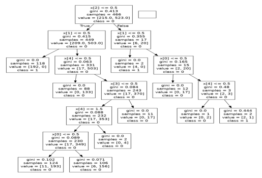

Prediksi Penyakit Tuberkulosis dengan Metode Random Forest#
Data Understanding#
Dataset data Tuberkulosis#
import pandas as pd
import joblib
from sklearn.model_selection import train_test_split
import pydotplus
dataset = pd.read_csv('dataTB.csv')
print(dataset)
---------------------------------------------------------------------------
FileNotFoundError Traceback (most recent call last)
Cell In[2], line 1
----> 1 dataset = pd.read_csv('dataTB.csv')
2 print(dataset)
File ~/.local/lib/python3.12/site-packages/pandas/io/parsers/readers.py:1026, in read_csv(filepath_or_buffer, sep, delimiter, header, names, index_col, usecols, dtype, engine, converters, true_values, false_values, skipinitialspace, skiprows, skipfooter, nrows, na_values, keep_default_na, na_filter, verbose, skip_blank_lines, parse_dates, infer_datetime_format, keep_date_col, date_parser, date_format, dayfirst, cache_dates, iterator, chunksize, compression, thousands, decimal, lineterminator, quotechar, quoting, doublequote, escapechar, comment, encoding, encoding_errors, dialect, on_bad_lines, delim_whitespace, low_memory, memory_map, float_precision, storage_options, dtype_backend)
1013 kwds_defaults = _refine_defaults_read(
1014 dialect,
1015 delimiter,
(...)
1022 dtype_backend=dtype_backend,
1023 )
1024 kwds.update(kwds_defaults)
-> 1026 return _read(filepath_or_buffer, kwds)
File ~/.local/lib/python3.12/site-packages/pandas/io/parsers/readers.py:620, in _read(filepath_or_buffer, kwds)
617 _validate_names(kwds.get("names", None))
619 # Create the parser.
--> 620 parser = TextFileReader(filepath_or_buffer, **kwds)
622 if chunksize or iterator:
623 return parser
File ~/.local/lib/python3.12/site-packages/pandas/io/parsers/readers.py:1620, in TextFileReader.__init__(self, f, engine, **kwds)
1617 self.options["has_index_names"] = kwds["has_index_names"]
1619 self.handles: IOHandles | None = None
-> 1620 self._engine = self._make_engine(f, self.engine)
File ~/.local/lib/python3.12/site-packages/pandas/io/parsers/readers.py:1880, in TextFileReader._make_engine(self, f, engine)
1878 if "b" not in mode:
1879 mode += "b"
-> 1880 self.handles = get_handle(
1881 f,
1882 mode,
1883 encoding=self.options.get("encoding", None),
1884 compression=self.options.get("compression", None),
1885 memory_map=self.options.get("memory_map", False),
1886 is_text=is_text,
1887 errors=self.options.get("encoding_errors", "strict"),
1888 storage_options=self.options.get("storage_options", None),
1889 )
1890 assert self.handles is not None
1891 f = self.handles.handle
File ~/.local/lib/python3.12/site-packages/pandas/io/common.py:873, in get_handle(path_or_buf, mode, encoding, compression, memory_map, is_text, errors, storage_options)
868 elif isinstance(handle, str):
869 # Check whether the filename is to be opened in binary mode.
870 # Binary mode does not support 'encoding' and 'newline'.
871 if ioargs.encoding and "b" not in ioargs.mode:
872 # Encoding
--> 873 handle = open(
874 handle,
875 ioargs.mode,
876 encoding=ioargs.encoding,
877 errors=errors,
878 newline="",
879 )
880 else:
881 # Binary mode
882 handle = open(handle, ioargs.mode)
FileNotFoundError: [Errno 2] No such file or directory: 'dataTB.csv'
Informasi Dataset#
dataset.info()
<class 'pandas.core.frame.DataFrame'>
RangeIndex: 985 entries, 0 to 984
Data columns (total 8 columns):
# Column Non-Null Count Dtype
--- ------ -------------- -----
0 NO 985 non-null int64
1 UMUR 985 non-null int64
2 JENIS KELAMIN 985 non-null object
3 FOTO TORAKS 985 non-null object
4 STATUS HIV 985 non-null object
5 RIWAYAT DIABETES 985 non-null object
6 HASIL TCM 985 non-null object
7 LOKASI ANATOMI 985 non-null object
dtypes: int64(2), object(6)
memory usage: 61.7+ KB
dataset.dtypes
NO int64
UMUR int64
JENIS KELAMIN object
FOTO TORAKS object
STATUS HIV object
RIWAYAT DIABETES object
HASIL TCM object
LOKASI ANATOMI object
dtype: object
Mengecek Jumlah Data#
len(dataset.index)
985
Preprocessing Data#
Missing Values#
Menampilkan Jumlah Isian Tiap Kolom Features#
print(dataset['UMUR'].value_counts())
UMUR
60 33
50 30
51 27
55 27
49 25
..
83 2
87 2
85 1
82 1
91 1
Name: count, Length: 85, dtype: int64
print(dataset['JENIS KELAMIN'].value_counts())
JENIS KELAMIN
L 565
P 420
Name: count, dtype: int64
print(dataset['FOTO TORAKS'].value_counts())
FOTO TORAKS
Positif 740
Negatif 245
Name: count, dtype: int64
print(dataset['STATUS HIV'].value_counts())
STATUS HIV
Negatif 959
Positif 26
Name: count, dtype: int64
print(dataset['RIWAYAT DIABETES'].value_counts())
RIWAYAT DIABETES
Tidak 939
Ya 46
Name: count, dtype: int64
print(dataset['HASIL TCM'].value_counts())
HASIL TCM
Rif Sensitif 794
Negatif 185
Rif resisten 6
Name: count, dtype: int64
Mengganti Missing Values dengan Modus (Data terbanyak) Tiap Kolom Features#
dataTB = dataset
# Mengganti 'Tidak dilakukan' pada 'FOTO TORAKS' dengan 'Positif' (modus)
dataTB['FOTO TORAKS'].replace('Tidak dilakukan', dataTB['FOTO TORAKS'].mode()[0], inplace=True)
# Mengganti 'Tidak diketahui' pada 'STATUS HIV' dengan 'Negatif' (modus)
dataTB['STATUS HIV'].replace('Tidak diketahui', dataTB['STATUS HIV'].mode()[0], inplace=True)
# Mengganti 'Tidak diketahui' pada 'RIWAYAT DIABETES' dengan 'Tidak' (modus)
dataTB['RIWAYAT DIABETES'].replace('Tidak diketahui', dataTB['RIWAYAT DIABETES'].mode()[0], inplace=True)
/tmp/ipykernel_8100/1750346788.py:2: FutureWarning: A value is trying to be set on a copy of a DataFrame or Series through chained assignment using an inplace method.
The behavior will change in pandas 3.0. This inplace method will never work because the intermediate object on which we are setting values always behaves as a copy.
For example, when doing 'df[col].method(value, inplace=True)', try using 'df.method({col: value}, inplace=True)' or df[col] = df[col].method(value) instead, to perform the operation inplace on the original object.
dataTB['FOTO TORAKS'].replace('Tidak dilakukan', dataTB['FOTO TORAKS'].mode()[0], inplace=True)
/tmp/ipykernel_8100/1750346788.py:5: FutureWarning: A value is trying to be set on a copy of a DataFrame or Series through chained assignment using an inplace method.
The behavior will change in pandas 3.0. This inplace method will never work because the intermediate object on which we are setting values always behaves as a copy.
For example, when doing 'df[col].method(value, inplace=True)', try using 'df.method({col: value}, inplace=True)' or df[col] = df[col].method(value) instead, to perform the operation inplace on the original object.
dataTB['STATUS HIV'].replace('Tidak diketahui', dataTB['STATUS HIV'].mode()[0], inplace=True)
/tmp/ipykernel_8100/1750346788.py:8: FutureWarning: A value is trying to be set on a copy of a DataFrame or Series through chained assignment using an inplace method.
The behavior will change in pandas 3.0. This inplace method will never work because the intermediate object on which we are setting values always behaves as a copy.
For example, when doing 'df[col].method(value, inplace=True)', try using 'df.method({col: value}, inplace=True)' or df[col] = df[col].method(value) instead, to perform the operation inplace on the original object.
dataTB['RIWAYAT DIABETES'].replace('Tidak diketahui', dataTB['RIWAYAT DIABETES'].mode()[0], inplace=True)
# Mendapatkan modus terbesar kedua dari kolom 'HASIL TCM'
modus_kedua = dataTB['HASIL TCM'].value_counts().sort_values(ascending=False).index[1]
# Mengganti 'Tidak dilakukan' dengan modus terbesar kedua
dataTB['HASIL TCM'].replace('Tidak dilakukan', modus_kedua, inplace=True)
/tmp/ipykernel_8100/1279823116.py:5: FutureWarning: A value is trying to be set on a copy of a DataFrame or Series through chained assignment using an inplace method.
The behavior will change in pandas 3.0. This inplace method will never work because the intermediate object on which we are setting values always behaves as a copy.
For example, when doing 'df[col].method(value, inplace=True)', try using 'df.method({col: value}, inplace=True)' or df[col] = df[col].method(value) instead, to perform the operation inplace on the original object.
dataTB['HASIL TCM'].replace('Tidak dilakukan', modus_kedua, inplace=True)
print(dataTB['FOTO TORAKS'].value_counts())
print(dataTB['STATUS HIV'].value_counts())
print(dataTB['RIWAYAT DIABETES'].value_counts())
print(dataTB['HASIL TCM'].value_counts())
FOTO TORAKS
Positif 740
Negatif 245
Name: count, dtype: int64
STATUS HIV
Negatif 959
Positif 26
Name: count, dtype: int64
RIWAYAT DIABETES
Tidak 939
Ya 46
Name: count, dtype: int64
HASIL TCM
Rif Sensitif 794
Negatif 185
Rif resisten 6
Name: count, dtype: int64
# Menyimpan hasil operasi Missing Values ke file CSV baru
dataTB.to_csv("dataTB.csv", index=False)
Split Dataset (Data Train & Data Testing)#
Membagi Dataset dengan Perbandingan 80:20#
# Membagi dataset menjadi training dan testing (80:20)
X = dataTB.drop('LOKASI ANATOMI', axis=1) # Pisahkan fitur (selain kolom LOKASI ANATOMI)
y = dataTB['LOKASI ANATOMI'] # Kolom target (LOKASI ANATOMI)
X_train, X_test, y_train, y_test = train_test_split(X, y, test_size=0.2, random_state=42)
Data Train#
# Menyimpan data training ke CSV
X_train.to_csv("data_training.csv", index=False)
y_train.to_csv("target_training.csv", index=False)
Data Testing#
# Menyimpan data testing ke CSV
X_test.to_csv("data_testing.csv", index=False)
y_test.to_csv("target_testing.csv", index=False)
Informasi Split Dataset#
# Cetak informasi dataset
print(f"Jumlah data training: {len(X_train)}")
print(f"Jumlah data testing: {len(X_test)}")
Jumlah data training: 788
Jumlah data testing: 197
Menampilkan Jumlah Isian Kolom Target/Output#
print(dataset['LOKASI ANATOMI'].value_counts())
LOKASI ANATOMI
Paru 714
Ekstra paru 271
Name: count, dtype: int64
Encoding Data#
import pandas as pd
from sklearn.preprocessing import LabelEncoder
def encode_data(data_path, target_columns):
# Load data
data = pd.read_csv(data_path)
# Encode target columns
encoder = LabelEncoder()
for column in target_columns:
data[column] = encoder.fit_transform(data[column])
# Save encoded data
data.to_csv("encoded_dataTB.csv", index=False)
target_columns = ['JENIS KELAMIN', 'FOTO TORAKS', 'STATUS HIV', 'RIWAYAT DIABETES', 'HASIL TCM', 'LOKASI ANATOMI']
encode_data('dataTB.csv', target_columns)
Modeling Data#
Random Forest Classification#
import pandas as pd
from sklearn.model_selection import train_test_split
from sklearn.ensemble import RandomForestClassifier
# Load encoded data
data = pd.read_csv("encoded_dataTB.csv")
# Define feature and target columns
feature_columns = ['JENIS KELAMIN', 'FOTO TORAKS', 'STATUS HIV', 'RIWAYAT DIABETES', 'HASIL TCM']
target_column = 'LOKASI ANATOMI'
# Split data into training and testing sets (assuming you haven't done this yet)
X = data[feature_columns]
y = data[target_column]
X_train, X_test, y_train, y_test = train_test_split(X, y, test_size=0.25, random_state=42)
# Create and train model (same as before)
clf = RandomForestClassifier(n_estimators=100, random_state=42)
clf.fit(X_train, y_train)
joblib.dump(clf, 'rndm_forest_model.joblib')
# Make predictions (same as before)
y_pred = clf.predict(X_test)
Evaluasi Data#
Confusion Matrix Evaluation#
from sklearn.metrics import accuracy_score, precision_score, recall_score, f1_score
# Evaluate model (optional)
accuracy = accuracy_score(y_test, y_pred)
precision = precision_score(y_test, y_pred)
recall = recall_score(y_test, y_pred)
f1 = f1_score(y_test, y_pred)
print(f"Akurasi: {accuracy}")
print(f"Precision: {precision}")
print(f"Recall: {recall}")
print(f"F1-score: {f1}")
Akurasi: 0.979757085020243
Precision: 0.9731182795698925
Recall: 1.0
F1-score: 0.9863760217983651
Visualisasi Data#
import pandas as pd
from sklearn.ensemble import RandomForestClassifier
from sklearn.model_selection import train_test_split
import matplotlib.pyplot as plt
from sklearn.tree import export_graphviz
import pydotplus
# Visualize the first tree
tree = clf.estimators_[0]
class_names = [str(name) for name in data[target_column].unique()]
# Export the tree with higher DPI
export_graphviz(tree, out_file='tree.dot', class_names=class_names)
# Create a pydotplus object and write PNG image
graph = pydotplus.graph_from_dot_file('tree.dot')
graph.write_png('tree.png')
# Display the tree image with larger size
plt.imshow(plt.imread('tree.png'), extent=(0, 12, 0, 8))
plt.axis('off')
plt.show()
